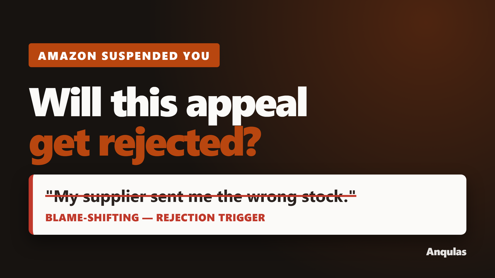

I build the tool that answers a compliance question — and the video that sells it.
Most compliance content is a PDF nobody reads. I build browser-based
tools that take a business's own numbers and tell them where they stand, then produce
the explainer video, the landing page and the search content that bring buyers to it.
One person, start to published.
What I actually deliver
Any one of these on its own, or the whole chain.
Interactive decision tools
Self-contained HTML. Runs in the browser, no server, no data leaves the user's
device — which matters when the input is commercially sensitive.
Explainer video
Recorded against the live product, not mockups. Narration, captions, thumbnail,
chapters. Published and packaged for YouTube.
Landing page & search content
Sales page plus the long-tail guide pages that rank. Sitemap, schema, canonicals,
Search Console setup.
Source-checked research
Every claim tiered: regulator's own wording, multiple practitioners, or unverified.
Anything I can't source doesn't ship.
Case study — Amazon seller deactivation
Built and published in one week, solo.
The problem
An Amazon seller whose account is deactivated has two realistic options: pay a
consultant $1,495–$2,500, or guess. Amazon's own notice commonly states that
permanent deactivation follows after two unsuccessful appeals — so a bad first
attempt is expensive in a way most sellers don't realise.
What I built
A Plan of Action builder covering 15 deactivation reasons, each with its
own evidence list, that checks the seller's draft against 9 language rules —
blame-shifting, pleading, future tense where past tense is required, unverifiable
absolutes.
Four supporting tools — a first-48-hours checklist that persists locally,
worked examples shown weak and strong, and a 90-day held-funds calculator.
An 8-minute explainer video recorded against the live tool, with synthetic
narration, hand-timed captions, chapters, a custom thumbnail and a 9:16 short.

Vanilla JS · zero dependenciesCloudflare WorkersPlaywrightffmpegEdge TTSTechnical SEO
The part worth hiring for. While researching, I found a widely-repeated claim
about an Amazon enforcement system that several firms describe as fact. I could not
source it to Amazon or any independent record, so it was excluded and listed publicly
as unverified. I also found — and corrected — a false precision in my own draft after
tracing a figure back to the original reporting. Content in a regulated space is worth
nothing if it can't survive that kind of check.
A second domain, same method
European Accessibility Act — Annex VI workbook
A free browser tool that walks a business through the disproportionate-burden
assessment the EAA requires, producing a saveable record. It implements the
micro-enterprise test correctly — the staff headcount and the
turnover-or-balance-sheet limb, with the product-versus-service distinction that
determines whether the exemption applies at all.
Most published summaries of this test get it wrong. Getting it wrong in a tool
creates liability for the user, which is the reason I read the directive text rather
than the summaries.
Live at anqulas.com/eaaNo signup · no tracking
How I work
1 weekResearch to published, for the case study above
0External requests in the delivered tools
3 tiersEvery factual claim sourced or excluded
Good fit / bad fit
Good fit
A rule your customers must comply with and don't understand. A calculation they
currently do in a spreadsheet. A question your sales team answers by email fifty
times a month.
Bad fit
Anything needing legal sign-off as advice — I build tools, I'm not a lawyer.
Large multi-team applications. Ongoing retainer development.